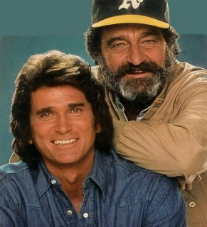
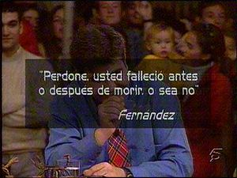

El Informal
 De: La Frikipedia, la enciclopedia extremadamente seria.
De: La Frikipedia, la enciclopedia extremadamente seria.
 Michael landon con su novio espiandote.
 Fueron victimas de su propia fama.
El programa afecto a personas famosas y poderosas, cuuñaaaoooo...
Espacio televisión de variedades extremadamente friki emitido justamente cuando Telecinco (y ya era hora) mostraba producciones de gran calidad (como Crónicas Marcianas, Gran Hermano, Caiga quien Caiga y demás frikerías) allá por 1997, año arriba, año abajo, (día y hora por determinar) para evitar que el efecto 2000 hiciese, pues eso, efecto, y no hubiese ni programa, ni humanidad ni ostias, pero como no ocurrió...(¿o si?) al final no pasó nada.
PREPRODUCCION
Emitido a las nueve y media de la noche (menos mal que no estaba todavía el horario toca-Telediario y el programa prime-time de turno. El cometido de este grandísimo programa era:
- El de dar las noticias pero de un modo más friki y más descojonante. Y vaya que si lo conseguían: no había día en el que algún componente del programa se metiese una señora ostia en el decorado (muy currado y resistente a pesar del escaso presupuesto del programa)o se mofaran de algún político (casi siempre era Aznar) o de algún famoso (Enrique Iglesias, sobre todo), o de algún famosillo casposo de poca monta (Tamara, Yurena o Ámbar o coño se llame).
- También hacían doblajes (en ocasiones improvisados) de películas (generalmente antiguas por aquello del presupuesto) o de entrevistas de famosos, que hacían que dijesen cada gilipollez más grande que la anterior. Mas tarde se supo que era lo que realmente pensaban los actores.
PERTETRANTES Y SECCIONES
- Javier Capitán: calvo, feo y merengue, sin embargo con gran humor, presentaba este programa y habitualmente era poseido por Felipe Ladronzalez, Di Estefano o Jordi Pujol, con el que guarda un gran parecido.
- Florentino Fernandez: expresidente del rea...., antiguo integrante de la banda Esta Noche Cruzamos el Missisipi, capaz de imitar a mil personajes: un gordo, Jesus Gil, un gordo con gafas..., presenta el programa con Capi.
- Inma del Moral: ni gracia, ni arte, sin casi saber hablar se colo esta medio rubia de dientes separados para hacer los reportajes en la calle. Eso si, tiene un buen par de razones. Sustituida por otra mucho mejor.
- Patricia Conde: la mucho mejor, requetepatri, con gracia, salero, mas burra que un arado de piedra y buena buena de la muerte, hacia buenos reportajes y parodias con los demas.
- Miki Nadal: rescatado de un psiquiatrico, era el mas risueño, maestro multivoces en los doblajes de los videos.
- Felix Sucosucomifelisuco: calvo como el capitan, hacia tremendos reportajes de calle ademas de cantar con fantastica voz, al final se calento y revento su guitarra.
Pifias Mentales
En este espacio, recopilaban las perlas de sabiduria que soltaban cuales bombas atomicas, los personajillos que pululaban por la television de entonces, ademas de presidentes de gobierno, ministros, filosofos con carrera, medicos, cantantes, futbolistas, toreros, etc....

|
E mentalizarze y quererzé de verdá, sano, eze cuerpo, tené potencia, se feli, quererte tú mismo a quererte tú mucho, porque quiere también al que tiene a tu lao y todo zale de verdá de deporte.
|

|
| El Cordobés padre dando consejos a la futura edad de oro del deporte aspañol.
|
|
|
Es negro, pero al tiempo no es negro. Es americano puro. El tiempo no es negro puro, no, no, no es Michael Jack... No, no. No es negro. Es negro, blanco, filipino, Jim "Andris" y una mezcla de jamaicol. Una cosa rara.
|
|
| Dr. Iglesias Puga - Antropologo.
|
|
|
No, ¿Mi color favorito?...Nooo, no tengo, no tengo, no tengo... fav, ah, eh... como el... no tengo un color favorito... o sea el azul.
|
|
| Enrique Iglesias, familia colorin.
|
|
|
Lo que le quiero decir es que no me pida usted que ha "recordao" aquí que yo había "estao" aquí hace 48 horas y además tengo que estar me da la sensación que 48 horas más tarde, por tanto no me pida cada 48 horas que vuelva a decir lo mismo.
|
|
| José María Ansar, limite 48 horas.
|
|
|
¿Que te parece la figura de Vargas Llosa?. Pues le sigo hace tiempo, nunca he tenido la suerte de leer nada de el.
|
|
| Sofia Mazagatos - Intelectual.
|
|
|
¿Le gusta a usted la hipica?. Pues la verdad es que si, no olviden ustedes que yo tengo un tio que fue recordman mundial de salto de longitud.
|
|
| J.M Alvarez del manzano - alcalde ecuestre.
|
|
|
Hoy la vida es tan, tan, tan..... como te iba a decir yo.... tan, tan, tan, tan veloz, tan rápida, tan espuni.
|
|
| Dr Iglesias Puga - tantantantantantan tantantan.
|
|
|
Yo pienso como usted, yo pienso que yo no pienso.
|
|
| Felipe Gonzalez - librepensante.
|
|
|
Tengo una oreja enfrente la otra.
|
|
| Jose Maria Ansar - enfrente.
|
Aqui se puede ver la recopilacion de las dramaticas declaraciones.
Frases hipnotizadoras del programa
- " Bo que pacha "
- " Tiki tiki tiii, no me cansum nenitas "
- " Guepa guepa guepacha "
- " Bienvenidos a mi teeeemplo de sabidurida... "
- " Po cojonudo "
- " Eres mas pequeño que la gameboy de los G.I Joe "
- " Un abrazo chato "
- " Hoooola requete! "
Falsas Tomas Falsas
Tomas falsas de peliculas del primer cuarto de siglo, con un doblaje de gran calidad. Posterior mente se añadieron tomas falsas de personajes nuevos: Bruce Lee va al baño, El burlador de Castilla, voces de Darth Vader, Rio lobo ( John Wayne se saca una muela ). Aqui esta el recopilatorio.
|
|
Si quieres una prueba de que yo soy tu requete, que sepas que tengo el troncho como el cuello de Chiquetete.
|
|
| Errol Flynt. Secuencia del balcon, primera.
|
|
|
!! Joder cuanto borracho, yo tambien quier una cerveza coño ¡¡
|
|
| Voces de Darth Vader. Primera.
|
|
|
Con los dedos de las manos y los dedos de los pies, los cojones y la polla todos suman ventitres.
|
|
| Errol Flynt. Secuencia del balcon. Quinta.
|
La inquietante hora de Landau
Presentado por Michael Landau Porsaco (primo de Alfredo Landau), se hacía eco de las locuras sobre extraterrestres, sucesos parasubnormales, cosas del espacio y los resumenes de Médico de familia. Vamos, que ni Íker Jiménez ni su Cuarto Milenio les llega a la punta de los zapatos al Landau este...
Parecidos razonables
Mega seccion que hacia justicia al comparar a nuestros famosetes con otros famosetes de otros paises y tambien China.
- La Duquesa de Alba - Linda Blair (la niña del exorcista)
- Mercedes Milá - Camilla Parker Bowles
- Javier Arzallus - El Pinguino de Batman
- Alberto Ruiz Gallardón - Boris Izaguirre
- Rafael Alberti (el poeta, no el actor porno) - Doctor Zaius (el planeta de los simios)
- Rody Aragon - Jimenez Losantos - El Gran Wyoming
- Vicente del Bosque - Krusty el Payaso
Cantando las 40
Presentado por Fernan Bizco con sobredosis de donetes, dopainting of donetes, ajustaba la actualidad musical del mundo con unas letras que reflejaban la realidad del momento, to te realiti of te moment. Gran controlador de la camara, fabuloso estilista y poliglota dominador del spanglish.
Videoclips de el Informal
En su ultima temporada, los muchachos del informal hicieron grandes parodia-videoclips de grandes grupos musicales tales como: "Voy a Sacedón" (versión de I Still Haven’t Found What I’m Looking For de U2), "El Pelo P'Atrás" (Stayn Alive de los Bee Gees),"Que Manía" (en referencia al conocido Mamma Mia de Abba), "Me quiero Reir" (En homenaje a la canción I Want to break Free de Queen, teniendo este video la intro de Bohemian Rapsody), "Raro Malo" (parodia de Thriller de Michael Jackson), "Vaca burra" (Every breathe you take del grupo The Police)
PERSONAJES DE LOS DOBLAJES
El espíritu del informal avisa: este apartado puede ser extremadamente largo dado que todos los personajes de este programa son importantes así como su "indiosincrasia" y merecen su mención.
- Arnold Schwarzenegger: más conocido en el programa como el chuache, mostrándonos que realmente tenía sangre maña en sus venas y que era un ferviente seguidor de La Pilarica. Según el programa, se mete a científico (y encuentra remedios para la sinusitis), se dedica a matar anguilas (y las manda "pal Ebro").
- Sargento Tarrega: piloto octogenario sargento de primera y precausion amigo volador cielo peligroso, o chuchi para los amigos, hacia misiones tales como espiar el pentagono, hacer piruetas en el aire con su biplano azul celeste y decir " Es lo que tienen las casas nuevas, que se oye todo jejejeje... "
- Pablito´s y su guitarra: mitico cantautor, a la altura del niño de la carreta, el cual se hizo muy popular con la cancion " Soy la juerga padre, la alegria de la huerta" que estuvo nomidada para los Grammy premio de la A.P.C.C., asociacion de productores del cartel colombiano.
- Gil Kong: es la digievolucion total de Jesús Gil con pelo redirigido, con sus frases tipicas: "!!Sociatas babiosos, facinerosos¡¡" y "!!Sus vais a enterar gañanes¡¡".
- Poli Risitas: empezaba con un, " que bueno tio ", agente de la ley de gran atractivo, su encanto empezaba cuando abria la boca. Una de las risas mas envidiadas e imitadas en todo el mundo.
- Lo que diga la rubia: miembro femenino de un jurado, todos terminaron por rendirse a sus pies con el cantico ritual " Lo que diga la rubia ". Con mas poderes que el hipnosapo.
- Brigadier Pepis: activo miembro de las juventudes gayanas, incitaba a todo el mundo a vivir la vida quepa-queeeepaaaachaa, siempre con mascara, abanico y lengua fuera.... mmmmmm..... Si ve un agujero lo tapa al instante.
- Maestro Monje Rama-lama: solo quiere que le visiteis, " Me congratula que vengais a mi templo de sabidurida, hijos midos...".
- Mike Tison: famoso sacerdote ( repartio 47.294 ostias y gano 117 combates a comunistas ), entrevistado y protagonista de varios reportajes, le gustaba ponerse boina.
- Charlon Heston: famoso actor, amigo de los simios, amante bandido. Eternamente peleado con el realizador Culebras. Explica cosas y ya esta.
- Michael Landon: famoso espia, construyo una autopista hacia el cielo, invento las katiuskas con sonido incorporado de aplastar cucarachas. En su mas famoso video explica que son los gays y en su otro video mas famoso, nos enseña la selectividad.
- El Cordobes: torero y deportista de elite, debajo siempre lleva abanderado, el se quiere sano porque sale todo de verdad de deporte. En una vida anterior fue "Ninlla".
- El Señor de la Puerta nº 3: gran filosofo y hombre pensante, quizas uno de los mas sabios de todo el planeta, tiene respuesta para todo: "po cojonuo". Con mas vocabulario que sloth de Los goonies
- El Profesor Achee lee poo: gran maestro de karate, sevillanas, toreo, furgol
- Carmina Ordoñez: "!!ooooooohh¡¡, sois unos desaogaos, estais a ayanamiento de los seres humanos de la sensibilidad", tambien sale en pifias mentales.
- Bertin Osborne: presenta y entrevista a personajes zingao en una tumbona con dos copas de mas.
- Alfredo Diestefano: filosofando sobre futbol, "porque es gol cuando la pelota cruza los tres palos sobre la linea, entonces los muchachos lo vieron claro...".
- El Cuñao y el Peito: " tu lo has cogio Jezu, ¿Por que no te rie?", contertulios de ratones coloraos y gran recurso del programa. Hasta Tom Cruise dice "Cuuñaaaaaaaaoooooooo".
- Tom Cruise: actor en auge que una vez le engañaron para decir: "Cuuñaaaaaaaaoooooooo".Aqui lo veras.
- Carmele Perra: contertulia de tombola con peinado de vaca, maltratada psicologicamente por Mariñas.
- Jesus Mariñas: piropeador incansable y pediorista, " que te calles Karmele", "callate perra".
Una muerte injusta
El programa tenía grandes índices de audiencia (a pesar de que todavía en el 97, Telecinco no se veía en muchos sitios) llegando a superar los 20 millones de espectadores; y además recibió numerosos premios (sin tener que recurrir a amaños ni a favores sexuales), pero todos estos logros no bastaron para que el Informal siguiese en el año 2002 (fecha de defunción: 5-4-2002, D.E.P.), que fue sustituido por esa aberración mal parida llamada Gran Hermano 3, y presentado no por nuestra gran Mercedes Milá (se dice que hace donaciones mensuales a esta, nuestra enciclopedia), sino por el hediondo Pepe Navarro. De no ser por la mierda ésta de edición de Gran Hermano, El Informal hubiese seguido todavía actualmente y más fresco que una lechuga e incluso se decía que podía durar más que Los Simpsons.
Autor(es):
- Roms
- Khazike Khashondo
- Azulejos
- El Sevillano
- Pakirri
- Veni Vidi Vici
- Malcom 12
- Milongas
- Lokasha18
- Bittorlopez
Frikipedia 2005-2016, Licencia
GFDL 1.2 - Extraído por FrikiLeaks